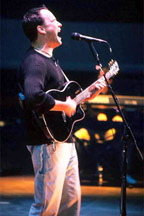

|
|
Dave Matthews has chronicled his life's travels so often that when asked, he can rattle off the details without pause. It goes like this: Born in Johannesburg, South Africa, in 1967. Moves two years later with his family to Westchester County, N.Y., where his dad, a physicist, goes to work for IBM. Then, in the early `70s, to Cambridge, England, before returning to New York- where his dad died in 1977. The family moved back to South Africa in 1980, where Matthews went to a few different schools and "got more wise about the evils of government, there and in general." O.K.; pause for a breath.
The key move for Dave Matthews Band fans, of course, was when he relocated in 1986 to Charlottesville, VA., where his parents had lived before he was born. Though he also logged time back in South Africa and in Amsterdam, it was in Charlottesville where Matthews - who took piano lessons as a child before picking up the guitar at age nine - became part of the local music community and hatched the idea for his own band. "I didn't really have a vision, or a plan," says Matthews, acknowledging that some of his musical sensibility came from spending time in so many different places as a child. "I'm sure it gave me a little bit of an openness. The most diverse music in the world is in America, `cause there's so many different cultures here, but what tends to be pushed to the top is often a narrow view of what there really is. So maybe (his travels) just gave me a wider pool of listening."
Matthews says his principal goal with the band was to surround himself with the best players possible. To this day he remains "amazed" that he was able to recruit and retain the four musicians he rather modestly refers to as his superiors. "I was just looking for people that I liked," explains Matthews, who feels he's "gotten a bit better" over the years. "Could I play with them was more of the question, I think. We just ended up fitting together. The band wasn't something that I was looking for; it was very much I loved the people I asked to play with me. There was a connection at the beginning, and I think what we've been about is not some grand scheme but more the spirit of everyone, which is why we ended up with this band and why it sounds like it does."